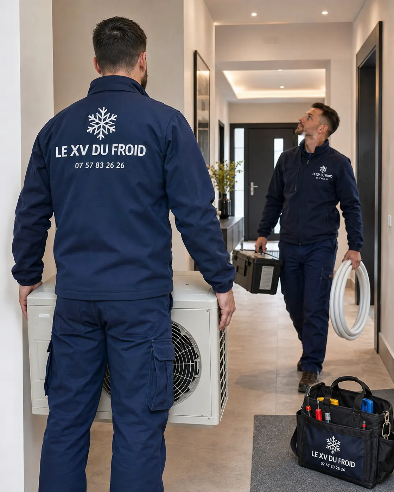

Urgence climatisation Montigny-le-Bretonneux · 78180
Urgence climatisation à Montigny-le-Bretonneux : un local technique qui chauffe, que faire d’abord ?
Un serveur qui monte en température, une cave à vin qui sort de sa plage, une réserve de médicaments qui n’est plus au frais : quand c’est le contenu qui souffre, la panne d’une climatisation devient vraiment pressante. Voici comment on s’y prend, et ce que vous pouvez sauver en attendant.
- Sauvegarder d’abord ce qui est sensible
- Diagnostic ciblé sur le froid
- Au plus vite, sans horaire promis

Température critique
Ce qui compte, ce n’est pas la clim, c’est ce qu’elle protège.
Dans un local technique, la température n’est pas un confort : c’est une condition de fonctionnement. Un serveur qui dépasse la limite de son constructeur se met en sécurité, puis s’éteint. Une cave à vin qui chauffe fait vieillir les bouteilles plus vite. Un local de stockage de produits sensibles perd de la valeur à chaque heure de trop.
Si vous cherchez un depannage climatisation urgence Montigny-le-Bretonneux pour ce genre de local, la première chose à faire n’est pas d’attendre le technicien : c’est de limiter la montée en température.
Nous donnons les gestes à l’appel, avant même de partir.
Premiers gestes
Avant notre arrivée : limiter la casse
Éteignez ou mettez en veille ce qui chauffe et n’est pas essentiel : serveurs secondaires, onduleurs, machines à l’arrêt. Moins il y a de chaleur dégagée, plus le local tient longtemps.
Ouvrez la porte du local et, si possible, placez un ventilateur pour brasser l’air vers un couloir plus frais. Évitez de souffler de l’air chaud vers l’intérieur.
Déplacez ce qui est le plus précieux : une sauvegarde, un stock sensible, du matériel vers un endroit tempéré.
Ne cherchez pas à réparer la clim vous-même. Concentrez-vous sur ce qu’elle protège.
Le diagnostic
Ce que le technicien regarde en premier
Dans un local à charge thermique élevée, il commence par le simple : alimentation électrique, disjoncteurs, thermostat, mode de l’appareil. Puis il passe aux sécurités : haute pression, antigel, protection du compresseur.
Beaucoup d’appareils de local technique tournent sans arrêt. Leurs pannes viennent souvent de l’usure : ventilateur du groupe extérieur, condensateur, contacteur du compresseur, filtre saturé.
Il vérifie aussi que l’évacuation n’est pas bouchée : un bac plein déclenche la sécurité de l’unité.

Un appareil en secours, c’est possible ?
Dans certains cas, nous pouvons proposer une solution provisoire : un appareil mobile prêté ou placé, une ventilation forcée, un rééquilibrage vers un autre split du bâtiment. Cela dépend du local et de ce qui est disponible sur le moment.
Nous ne promettons pas une solution de secours à chaque fois. Nous vous disons honnêtement ce qui est réaliste.
- Charge thermique estimée
- Solution provisoire étudiée
- Réparation planifiée si besoin
Les pannes
Ce qui arrête le plus souvent un local technique
Sur des appareils qui travaillent beaucoup, les pannes se ressemblent.
- Ventilateur du groupe extérieur : il tourne mal, le compresseur chauffe et se met en sécurité.
- Condensateur fatigué : le compresseur démarre mal puis déclenche.
- Filtre colmaté : le débit d’air baisse, l’unité givre.
- Évacuation bouchée : le bac déborde, une sécurité coupe l’unité.
- Panne de courant partielle : l’appareil ne se relance pas seul.
Prévenir
Éviter que cela recommence
Une fois la panne réparée, nous suggérons parfois de revoir l’installation : un second appareil en secours pour un local sensible, un contrôle plus fréquent, une alarme de température.
Ces suggestions viennent après la réparation et ne conditionnent jamais celle-ci. Vous décidez ensuite, avec un devis écrit.
Questions
Urgence climatisation d’un local technique : vos questions
Venez-vous en priorité pour un local technique ?
Nous tenons compte de la gravité. Un local où des équipements ou des produits sensibles risquent d’être abîmés passe avant une gêne de confort. Nous faisons au plus vite, mais sans horaire promis.
Quelle température un serveur supporte-t-il ?
Cela dépend du constructeur. La plage figure dans la fiche technique de l’équipement. Quand elle approche de la limite, coupez ce qui n’est pas essentiel.
Pouvez-vous réparer une clim de précision ?
Pour les modèles courants, oui. Pour les armoires de précision très spécialisées, nous vous disons dès l’appel si nous pouvons intervenir ou si un constructeur est plus adapté.
Et pour une cave à vin ?
Une cave refroidie a besoin d’un froid stable plus que d’un froid intense. Nous contrôlons l’appareil, le thermostat et l’isolation avant de conclure.
Faut-il prévenir le gestionnaire du bâtiment ?
Si le groupe est sur un toit ou en façade partagée, oui. Donnez-nous son contact à l’appel, nous préparons l’accès.
Que me remettez-vous après l’intervention ?
Un compte rendu daté, avec les constats, les pièces et les recommandations éventuelles. Il peut servir auprès d’un assureur.
Dans votre ville
Les autres services à Montigny-le-Bretonneux
Un besoin différent, une page différente : dépannage, entretien, installation ou urgence.
Autour de chez vous
Urgence de climatisation dans les villes voisines
Si vous êtes à la limite de deux communes, lisez aussi la page d’à côté.
- Urgence climatisation Bois-d’Arcy : la clim lâche au milieu d’une nuit chaude
- Urgence climatisation Voisins-le-Bretonneux : l’eau coule de la clim sur le parquet
- Urgence climatisation Élancourt : que dire au téléphone pour gagner du temps
- Urgence climatisation Fontenay-le-Fleury : salle de sport ou atelier à domicile en pleine chaleur
- Urgence climatisation L’Étang-la-Ville : panne un soir ou un week-end, tenir jusqu’au lendemain
- Urgence climatisation Maurepas : appartement en étage, escalier, balcon et accès au groupe
- Urgence climatisation Coignières : vivre seul, trier la panne et préparer le passage
- Urgence climatisation Noisy-le-Roi : panne par forte chaleur avec une personne fragile à la maison
- Urgence climatisation Bailly : le bureau à domicile qui chauffe avec ses ordinateurs
À côté
D’autres besoins dans les communes voisines
Chaque ville a ses pages.
Nos services
Aller plus loin sur la climatisation
Les pages du site qui complètent celle-ci : services, guides pratiques et devis.
- Dépannage climatisation en Île-de-France
- Installation de climatisation : split, gainable, monobloc
- Entretien de climatisation et de clim réversible
- Demander un devis climatisation gratuit
- Toutes nos zones d’intervention
- Fuite d’eau d’un climatiseur : causes et solutions
- L’entretien de la climatisation est-il obligatoire ?
Où on intervient
Montigny-le-Bretonneux et Saint-Quentin-en-Yvelines
Les zones d’activité, le secteur de la gare, les quartiers résidentiels, ainsi que Guyancourt, Élancourt, Voisins-le-Bretonneux, Trappes et La Verrière.
Signaler une panne à Montigny-le-BretonneuxÀ lire aussi
Autour de Saint-Quentin
Pages voisines : climatisation Guyancourt, climatisation Élancourt, climatisation Trappes.
Transparence
Un devis clair avant toute intervention.
Vous savez ce qui est prévu, pourquoi c’est nécessaire et à quel tarif avant que le technicien commence. Puis contrôles et essais avant son départ.